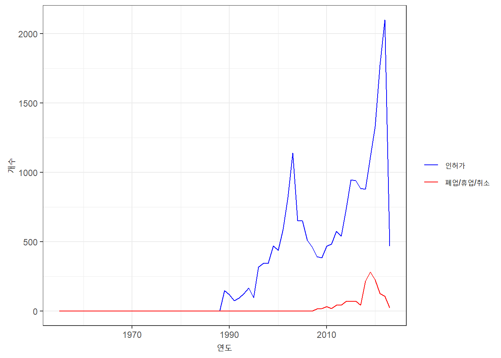

Chapter 7 시각화
7.1 지도
7.1.1 Coordinates
지방인허가데이터의 홈페이지 ’데이터 활용가이드’에서 좌표정보는 중부원점TM(EPSG:2097)이라고 소개됨.
그러나 제공되는 데이터에 해당 좌표정보로 지정하여 위도·경도 변환 시 오류 발생
- 구글맵, 네이버맵 등에서 나오는 위치와 200m 가량 차이 발생
EPSG:2097 → EPSG:5174
- EPSG:5174(Bessel 1841, TM직각좌표계)로 지정해야 오류 최소화됨.
지방인허가데이터에서 사용자들에게 잘못된 정보 제공하는 것으로 추정
Issue: XY좌표값의 소수점이 호출하면서 표시되지 않는 문제
기존 문자(character) 타입인 변수를 as.numeric 함수로 변환하면서 정보 유실
엑셀 파일 자체에서 미리 숫자로 변환해놓으면 데이터 로드 시 유실
getOption() 함수를 통해 현재 표시되고 있는 소수점 자리수 확인(7이었음)
해당 옵션을 option()함수를 통해 15자리로 수정하면서 문제 해결
## [1] 7coord <- df1[,c(1,10,11)] #1열:번호 / 10열:X좌표값 / 11열: Y좌표값
coord <- na.omit(coord) #좌표값이 없는 경우 삭제
point_localdb <- st_as_sf(coord, coords = c('좌표정보(X)','좌표정보(Y)'), crs = '+proj=tmerc +lat_0=38 +lon_0=127.0028902777778 +k=1 +x_0=200000 +y_0=500000 +ellps=bessel +units=m +no_defs +towgs84=-115.80,474.99,674.11,1.16,-2.31,-1.63,6.43')
#변경 후 좌표값의 좌표계 형식 지정(4326 = WGS84)
point_localdb_tf <- st_transform(point_localdb, crs = 4326)
str(point_localdb_tf)## sf [20,942 × 2] (S3: sf/tbl_df/tbl/data.frame)
## $ 번호 : chr [1:20942] "1" "2" "3" "4" ...
## $ geometry:sfc_POINT of length 20942; first list element: 'XY' num [1:2] 127 37.6
## - attr(*, "na.action")= 'omit' Named int [1:674] 65 66 70 97 110 119 135 185 186 187 ...
## ..- attr(*, "names")= chr [1:674] "65" "66" "70" "97" ...
## - attr(*, "sf_column")= chr "geometry"
## - attr(*, "agr")= Factor w/ 3 levels "constant","aggregate",..: NA
## ..- attr(*, "names")= chr "번호"df2 <- left_join(df1, point_localdb_tf, by="번호")
# 좌표 추출 및 변수 생성
df2$latitude <- st_coordinates(df2$geometry)[, "Y"]
df2$longitude <- st_coordinates(df2$geometry)[, "X"]#아래는 EPSG:2097로 지정한 경우
#point_localdb <- st_as_sf(coord, coords = c('좌표정보(X)','좌표정보(Y)'), crs = '+proj=tmerc +lat_0=38 +lon_0=127 +k=1 +x_0=200000 +y_0=500000 +ellps=bessel +units=m +no_defs +towgs84=-115.80,474.99,674.11,1.16,-2.31,-1.63,6.43')- 최종 파일 추출
df3 <- subset(df2, select = -geometry)
write.csv(df3,"C:/Users/wschoi/Desktop/TOY/[ITOCHU] 프로틴 파우더 시장 이해를 위한 소비자조사/지방인허가데이터/헬스장_위도경도추가.csv", fileEncoding = "cp949")Issue: geometry type의 벡터 추출
- 우선 텍스트(.csv) 파일로 추출하는 것으로 모면 ㅎㅎ
Issue: 깨짐
df_done 파일 그대로 추출하면 깨짐. encoding 필요
fileEncoding = “UTF-8” 옵션 추가
7.1.2 Mapping
#install.packages("leaflet")
#install.packages("geojsonio")
library(leaflet)
library(geojsonio)
df4 <- df2 %>%
filter(df2$영업상태구분코드=="01") %>%
select(longitude, latitude, 사업장명) %>%
na.omit()
m <- leaflet(df4) %>%
addProviderTiles("OpenStreetMap.Mapnik") %>% # add map tiles
addMarkers(lng = ~longitude, lat = ~latitude, popup = ~사업장명) # add markers with popups
# display the map
m7.2 연도별 헬스장 인허가 & 페업 수 추이
result_df %>%
group_by(year) %>%
summarise(인허가연도, "폐업/휴업/취소"=폐업연도+휴업시작연도+인허가취소연도) %>%
ggplot(aes(x = year)) +
geom_line(aes(y = 인허가연도, color = "인허가")) +
geom_line(aes(y = `폐업/휴업/취소`, color = "폐업/휴업/취소")) +
labs(x = "연도", y = "개수", color = "") +
scale_color_manual(values = c("인허가" = "blue", "폐업/휴업/취소" = "red")) +
theme_bw()